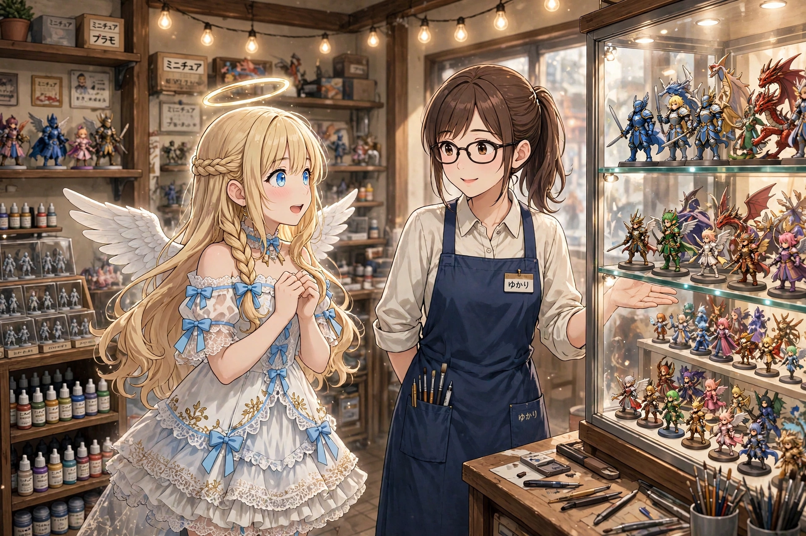
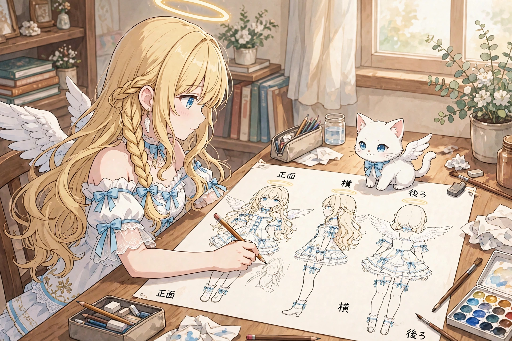
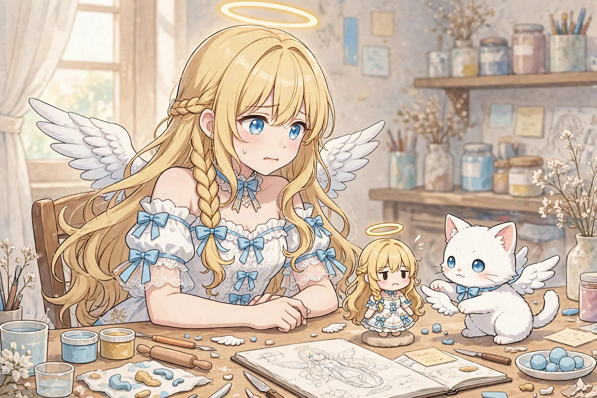
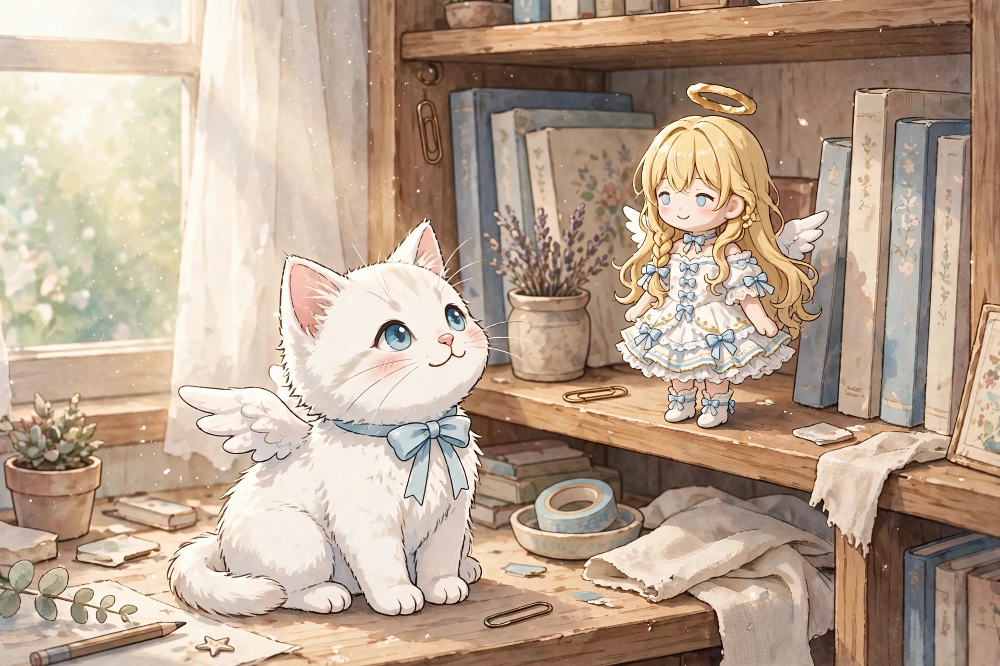

読み切り短編『わたしのフィギュア、作ってみた』を公開しました
2026年11月13日
読み切り短編『わたしのフィギュア、作ってみた』を公開しました。フィギュア店の棚の前で立ち止まったセラフィナが、自分のフィギュア作りに挑戦するお話です。
1. 棚の上のわたし

フィギュア店の棚には、たくさんの「誰か」が並んでいます。ガラスケースの中でポーズを決めた騎士、魔法の杖を構えた少女、少し自慢げに胸を張るロボット。どれも作った人の「好き」が、形になって立っているのでした。
その日、わたしは棚の前で、長いこと立ち止まっていました。
「ゆかりさん。……わたしのフィギュアって、作れるのでしょうか」
カウンターの向こうで、店員の二宮ゆかりさんが眼鏡の奥で目を丸くしました。
「セラフィナさんの、ですか？ ええ、作れますよ。誰かが作れば」
「誰かが」
「はい。たとえば、セラフィナさん自身とか」
帰り道、わたしの頭の中はその言葉でいっぱいでした。自分のフィギュアを、自分で作る。天使の修行には、たぶん含まれていません。でも、なんだかとても、地上らしい挑戦に思えたのです。
2. まずは三面図

「作るには、まず設計図がいるんです」
ゆかりさんに教わった最初の工程は、三面図でした。正面、横、後ろ。ぐるりと一周分の、自分自身の絵。
「翼と輪っかは細いから、少し太めに描くのがコツです。折れちゃうので」
「自分の翼を、太く……」
なんだか複雑な気持ちで描きました。鏡を見て、振り返って、また鏡を見て。足元のモコは、描きかけの紙の上に座って監督気取りです。尻尾の先が、ちょうど輪っかの位置に乗っています。
「モコ、それは監督じゃなくて、ただの居眠りの準備ですよ」
描き上がった三面図は、少し不格好でした。でも、正面のわたしはちゃんと笑っていて、横のわたしは翼を広げていて、後ろのわたしはリボンが自慢げでした。不格好でも、たしかに、わたしでした。
3. 粘土と格闘

次は試作です。樹脂粘土をこねて、小さなわたしを形にしていきます。これが、思った以上に大変でした。
頭を作れば体が潰れ、翼を付ければ輪っかが落ち、リボンを結べば三つ編みがほどける。大惨事です。
「あああ、翼が、翼が取れました……」
「にゃーん」
慰めてくれているのか、モコが取れた翼を前足でちょいちょいと転がします。……遊んでいますね、それは。
三度目の挑戦で、ようやく立てるようになりました。八センチほどの、小さなわたし。右の翼が少し大きくて、輪っかがほんの少し傾いていて、笑顔がちょっとだけ不器用です。でも、立っています。自分の足で、ちゃんと。
電話の向こうで、ルチアが笑いました。
「ふふん、随分と不格好な天使ね」
「か、完成したら見せますから！ ……多分、少し先ですけど」
「楽しみにしてるわよ。べ、別に、あんたのじゃないけど。その、不格好さがね」
4. 小さなわたしへ

出来上がった小さなわたしは、部屋の棚の一番端に置きました。上手な人の作品みたいに完璧ではありません。でも、朝の光の中で見ると、不器用な笑顔が少し誇らしげに見えます。
フィギュアって、姿を写すだけのものじゃないのかもしれません。「好き」という気持ちと、「作ってみたい」という気持ちを、こねて、潰れて、やり直して、それでも立たせた時間ごと、形にするもの。だから棚の上の誰かたちは、みんな少し自慢げな顔をしていたのですね。
「モコ、見てください。わたし、作れましたよ」
モコは小さなわたしの横に座って、満足そうに目を細めました。監督の最終確認は、合格、のようです。
夢は、まだ先にあります。いつか本格的な道具と、もっと上手な手で、翼も輪っかも完璧なわたしを作ること。その練習は、もう始まっています。地上の修行は、まだまだ続くのです。
今日もおつかれさまです。
（了）